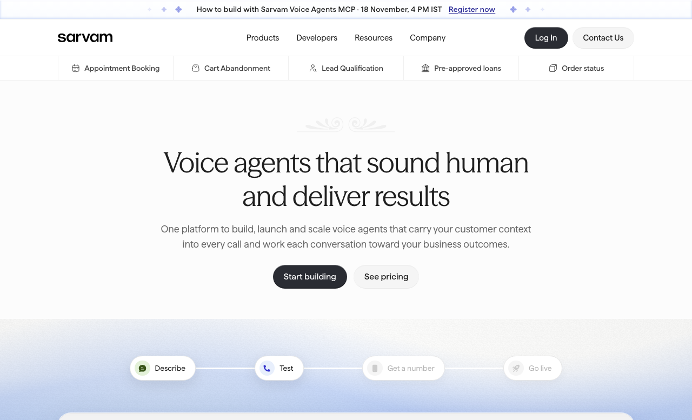
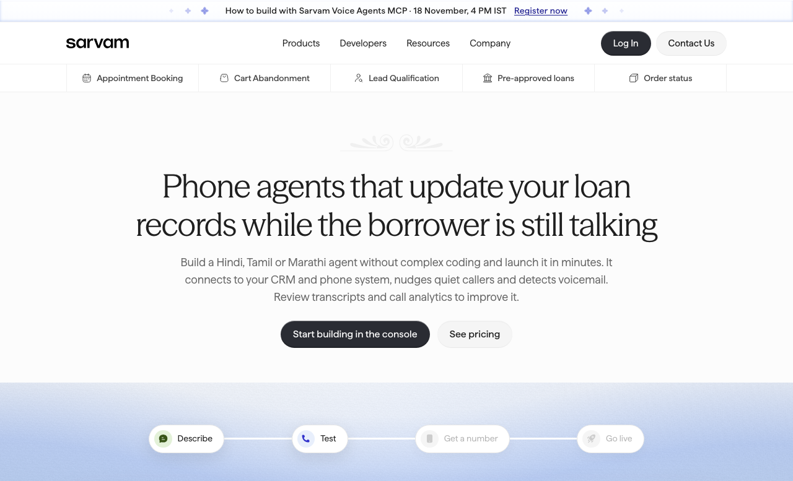

| Part | Baseline | Variant |
|---|---|---|
| H1 | Voice agents that sound human and deliver results | Phone agents that update your loan records while the borrower is still talking |
| Sub-line | One platform to build, launch and scale voice agents that carry your customer context into every call and work each conversation toward your business outcomes. | Build a Hindi, Tamil or Marathi agent without complex coding and launch it in minutes. It connects to your CRM and phone system, nudges quiet callers and detects voicemail. Review transcripts and call analytics to improve it. |
| Button | Start building | Start building in the console (goes to: console) |